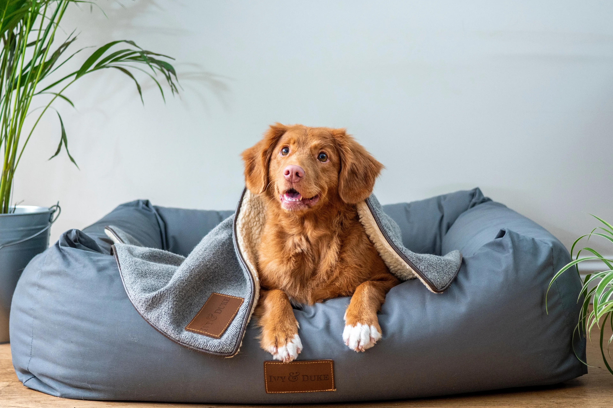
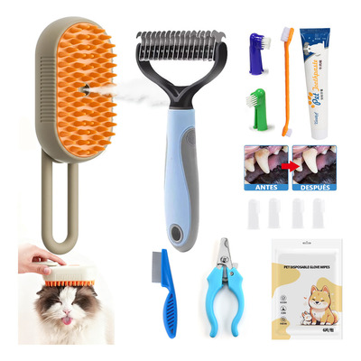
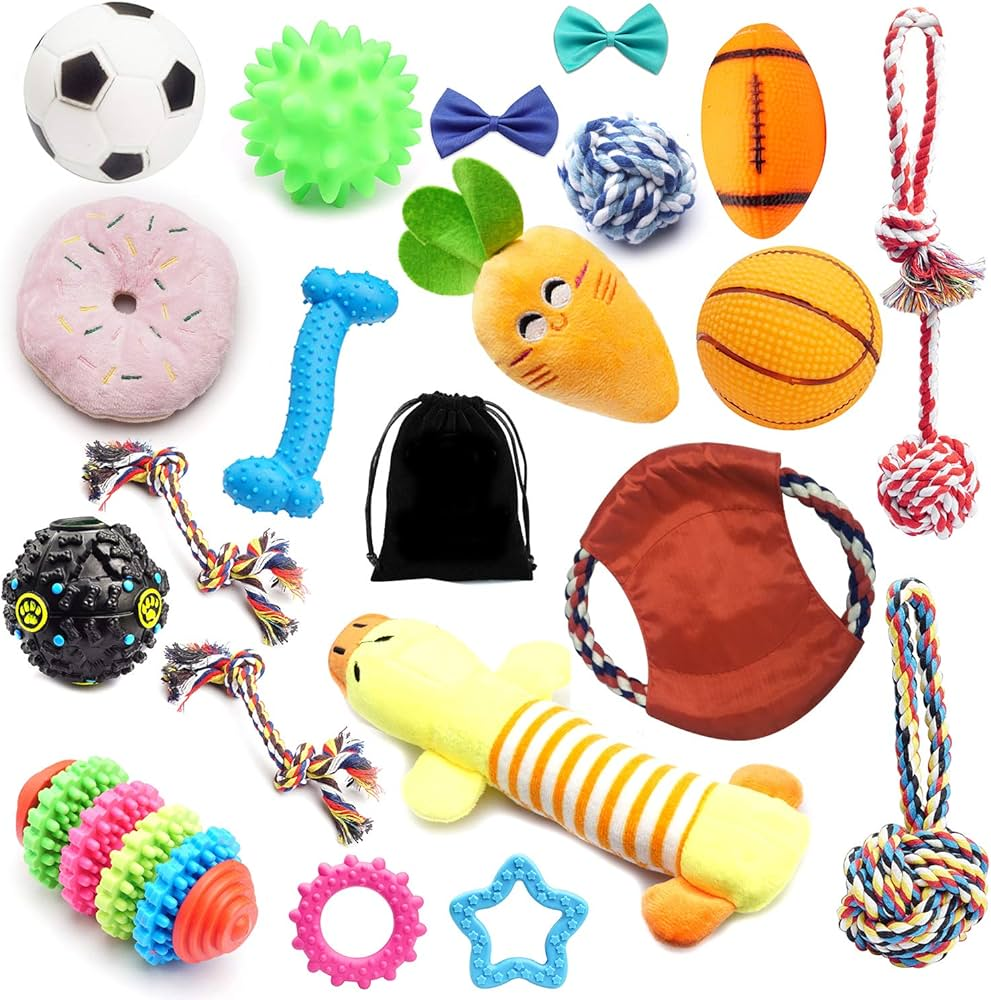
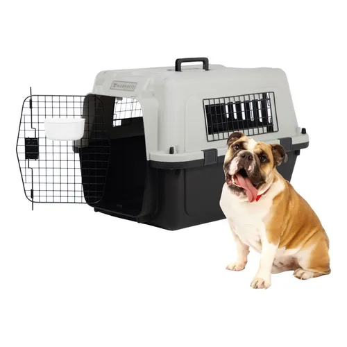
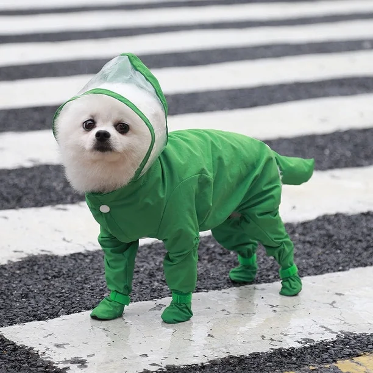

Paseos

El paseo no es solo "ir al baño", es el momento en que la mascota interactúa con el mundo.
Paseo: Seguridad y Socialización
- Estos accesorios garantizan que la exploración sea segura para terceros y para la propia mascota.
- Un buen arnés evita lesiones cervicales, y una correa resistente previene accidentes de tráfico o huidas por sustos.
- Es el vínculo físico que permite una libertad controlada.
Descansos

Dormir es el proceso donde el animal procesa lo aprendido y recupera tejidos.
Descanso: Salud Articular y Mental
- Proporcionar un lugar específico (cama o sofá).
- Ofrece aislamiento térmico (evita el frío del suelo que causa artritis) y seguridad emocional.
- Tener un lugar propio reduce los niveles de cortisol (la hormona del estrés), permitiendo que el animal se sienta protegido en su "territorio".
Higene

La higiene no es vanidad; es medicina preventiva básica.
Higiene: Prevención de Enfermedades
- Un cepillado regular elimina piel muerta y detecta parásitos o bultos a tiempo.
- Unas uñas cortas previenen deformaciones en la marcha y dolores óseos.
- El uso de champús adecuados mantiene la barrera ácida de la piel intacta, evitando dermatitis e infecciones.
Juguetes

Un animal aburrido es, casi siempre, un animal con problemas de conducta.
Juguetes: Equilibrio Psicológico
- Los juguetes funcionan como enriquecimiento ambiental.
- Los mordedores canalizan la ansiedad; en gatos, los rascadores son vitales para su salud muscular y emocional.
- Evitan la depresión y previenen que la mascota destruya muebles por frustración.
Viaje

Mover a un animal de su entorno habitual genera una respuesta de alerta.
Viaje: Reducción de Estrés y Normativa
- Los accesorios de viaje transforman un trayecto caótico en una experiencia predecible.
- Las transportadoras ofrecen un "refugio" oscuro y tranquilo, mientras que los cuencos plegables aseguran que no haya deshidratación, un riesgo alto durante el estrés del viaje.
- Además, cumplen con las leyes de tránsito para evitar multas y accidentes.
Moda

Aveces olvidamos que no todas las razas están diseñadas para todos los climas.
Moda: Adaptación Climática
- Un perro de pelo corto en un clima bajo cero sufre de hipotermia igual que un humano.
- Los impermeables evitan que el pelaje acumule humedad, lo que previene el mal olor y hongos.
- Las botas son esenciales para evitar quemaduras químicas por sal en la nieve o quemaduras térmicas por asfalto caliente.
Contacto
Si deseas conocer nuestros productos para tus mascotas o conocer más sobre este tema, puedes enviar un mensaje a través de un correo.